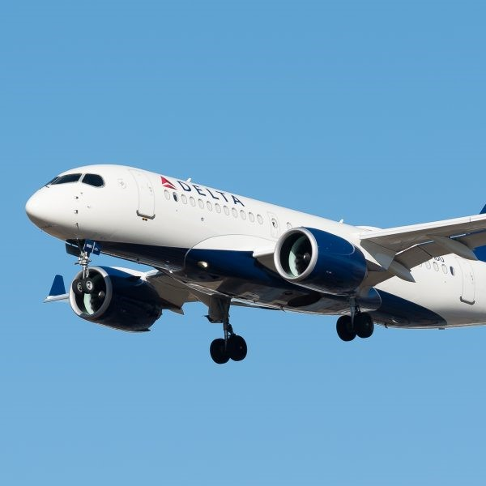

Projects

Airbus A220
I was a part of the initial launch of the A220 line in Mobile, Al. My team spent three
months in Mirabel, QC learning the process fomr our Canadian counter-parts in order to
bring production to the US. As a Lead Systems Installer, I managed a group of 10-15 people
daily. This included distributing work, troubleshooting problems, ensuring that all work
was up to standard.
Skills Used: JavaScript, HTML, CSS
GitHub Repo
App Link
Cessna Latitude
The Cessna Latitude was where I got my start in aviation manufacturing. I worked in the
final assembly area. This is the last station before the aircraft goes out to paint. A lot
of the job included checking over things to make sure that all of the quality marks were
met before it rolled out the door. This is where me being detail-oriented really came to
shine.
Skills Used: JavaScript, HTML, CSS
GitHub Repo
App Link